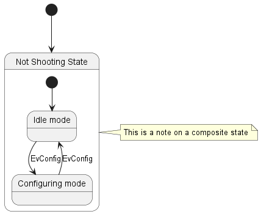

Zustandsdiagramme bieten eine visuelle Darstellung der verschiedenen Zustände, die ein System oder ein Objekt einnehmen kann, sowie der Übergänge zwischen diesen Zuständen. Sie sind für die Modellierung des dynamischen Verhaltens von Systemen unerlässlich, da sie aufzeigen, wie diese im Laufe der Zeit auf verschiedene Ereignisse reagieren. Zustandsdiagramme stellen den Lebenszyklus eines Systems dar und erleichtern so das Verständnis, den Entwurf und die Optimierung seines Verhaltens. Mit PlantUML zur Erstellung von Zustandsdiagrammen bietet mehrere Vorteile: - Textbasierte Sprache: Schnelles Definieren und Visualisieren von Zuständen und Übergängen ohne mühsames manuelles Zeichnen.
- Effizienz und Konsistenz: Sorgen Sie für eine rationelle Diagrammerstellung und eine einfache Versionskontrolle.
- Vielseitigkeit: Integrieren Sie sich in verschiedene Dokumentationsplattformen und unterstützen Sie mehrere Ausgabeformate.
- Open-Source & Community Support: Unterstützt von einer starken Community, die kontinuierlich zu den Verbesserungen beiträgt und unschätzbare Ressourcen zur Verfügung stellt.
Sie k√∂nnen [*] f√ºr den Anfangs- und Endpunkt von des Zustandsdiagramms verwenden. Verwenden Sie --> f√ºr Pfeile. üéâ Copied! 
 | @startuml
[*] --> State1
State1 --> [*]
State1 : this is a string
State1 : this is another string
State1 -> State2
State2 --> [*]
@enduml
|
Sie k√∂nnen hide empty description verwenden, um den Zustand als einfache Box darzustellen üéâ Copied!
| @startuml
hide empty description
[*] --> State1
State1 --> [*]
State1 : this is a string
State1 : this is another string
State1 -> State2
State2 --> [*]
@enduml
|
Ein Zustand kann auch verschachtelt werden. Dies funktioniert mit dem state Schl√ºsselwort und den geschweiften Klammern. üéâ Copied!
| @startuml
scale 350 width
[*] --> NotShooting
state NotShooting {
[*] --> Idle
Idle --> Configuring : EvConfig
Configuring --> Idle : EvConfig
}
state Configuring {
[*] --> NewValueSelection
NewValueSelection --> NewValuePreview : EvNewValue
NewValuePreview --> NewValueSelection : EvNewValueRejected
NewValuePreview --> NewValueSelection : EvNewValueSaved
state NewValuePreview {
State1 -> State2
}
}
@enduml
|
Mit dem state Schl√ºsselwort k√∂nnen auch l√§ngere Bezeichnungen eines Status definiert werden. üéâ Copied!
| @startuml
scale 600 width
[*] -> State1
State1 --> State2 : Succeeded
State1 --> [*] : Aborted
State2 --> State3 : Succeeded
State2 --> [*] : Aborted
state State3 {
state "Accumulate Enough Data\nLong State Name" as long1
long1 : Just a test
[*] --> long1
long1 --> long1 : New Data
long1 --> ProcessData : Enough Data
}
State3 --> State3 : Failed
State3 --> [*] : Succeeded / Save Result
State3 --> [*] : Aborted
@enduml
|
You can use [H] for the history and [H*] for the deep history of a substate. üéâ Copied!
| @startuml
[*] -> State1
State1 --> State2 : Succeeded
State1 --> [*] : Aborted
State2 --> State3 : Succeeded
State2 --> [*] : Aborted
state State3 {
state "Accumulate Enough Data" as long1
long1 : Just a test
[*] --> long1
long1 --> long1 : New Data
long1 --> ProcessData : Enough Data
State2 --> [H]: Resume
}
State3 --> State2 : Pause
State2 --> State3[H*]: DeepResume
State3 --> State3 : Failed
State3 --> [*] : Succeeded / Save Result
State3 --> [*] : Aborted
@enduml
|
You can also fork and join using the <<fork>> and <<join>> stereotypes. üéâ Copied!
| @startuml
state fork_state <<fork>>
[*] --> fork_state
fork_state --> State2
fork_state --> State3
state join_state <<join>>
State2 --> join_state
State3 --> join_state
join_state --> State4
State4 --> [*]
@enduml
|
Nebenl√§ufige Zust√§nde k√∂nnen mit dem -- oder || Symbol in einem zusammengesetzten Zustand zusammengefasst werden.. üéâ Copied!
| @startuml
[*] --> Active
state Active {
[*] -> NumLockOff
NumLockOff --> NumLockOn : EvNumLockPressed
NumLockOn --> NumLockOff : EvNumLockPressed
--
[*] -> CapsLockOff
CapsLockOff --> CapsLockOn : EvCapsLockPressed
CapsLockOn --> CapsLockOff : EvCapsLockPressed
--
[*] -> ScrollLockOff
ScrollLockOff --> ScrollLockOn : EvCapsLockPressed
ScrollLockOn --> ScrollLockOff : EvCapsLockPressed
}
@enduml
|
[Ref. QA-3086]WARNING ¬†This translation need to be updated.¬†WARNING The stereotype <<choice>> can be used to use conditional state. üéâ Copied!
| @startuml
state "Req(Id)" as ReqId <<sdlreceive>>
state "Minor(Id)" as MinorId
state "Major(Id)" as MajorId
state c <<choice>>
Idle --> ReqId
ReqId --> c
c --> MinorId : [Id <= 10]
c --> MajorId : [Id > 10]
@enduml
|
üéâ Copied!
| @startuml
state start1 <<start>>
state choice1 <<choice>>
state fork1 <<fork>>
state join2 <<join>>
state end3 <<end>>
[*] --> choice1 : from start\nto choice
start1 --> choice1 : from start stereo\nto choice
choice1 --> fork1 : from choice\nto fork
choice1 --> join2 : from choice\nto join
choice1 --> end3 : from choice\nto end stereo
fork1 ---> State1 : from fork\nto state
fork1 --> State2 : from fork\nto state
State2 --> join2 : from state\nto join
State1 --> [*] : from state\nto end
join2 --> [*] : from join\nto end
@enduml
|
[Ref. QA-404, QA-1159 and GH-887] You can add point with <<entryPoint>> and <<exitPoint>> stereotypes: üéâ Copied!
| @startuml
state Somp {
state entry1 <<entryPoint>>
state entry2 <<entryPoint>>
state sin
entry1 --> sin
entry2 -> sin
sin -> sin2
sin2 --> exitA <<exitPoint>>
}
[*] --> entry1
exitA --> Foo
Foo1 -> entry2
@enduml
|
Du kannst auch pin mit <<inputPin>> und <<outputPin>> stereotypes: hinzuf√ºgen üéâ Copied!
| @startuml
state Somp {
state entry1 <<inputPin>>
state entry2 <<inputPin>>
state sin
entry1 --> sin
entry2 -> sin
sin -> sin2
sin2 --> exitA <<outputPin>>
}
[*] --> entry1
exitA --> Foo
Foo1 --> entry2
@enduml
|
[Ref. QA-4309]WARNING ¬†This translation need to be updated.¬†WARNING You can add expansion with <<expansionInput>> and <<expansionOutput>> stereotypes: üéâ Copied!
| @startuml
state Somp {
state entry1 <<expansionInput>>
state entry2 <<expansionInput>>
state sin
entry1 --> sin
entry2 -> sin
sin -> sin2
sin2 --> exitA <<expansionOutput>>
}
[*] --> entry1
exitA --> Foo
Foo1 -> entry2
@enduml
|
[Ref. QA-4309] Mit dem -> Symbol können waagerechte Pfeile erzeugt werden. Man kann die Richtung der Pfeile außerdem mit der folgenden Syntax festlegen: -down-> (default arrow)-right-> or ->-left->-up->
üéâ Copied!
| @startuml
[*] -up-> First
First -right-> Second
Second --> Third
Third -left-> Last
@enduml
|
Man kann die L√§nge eines Pfeils verk√ºrzen, in dem man nur den ersten Buchstaben der Richtung verwendet (zum Beispiel, -d- anstelle von -down-) oder die ersten beiden Buchstaben (-do-). Beachten Sie, dass sie mit dieser M√∂glichkeit sorgf√§ltig umgehen: GraphViz liefert normalerweise recht gute Ergebnisse, ohne das manuell eingegriffen werden muss. You can change line color and/or line style. üéâ Copied!
| @startuml
State S1
State S2
S1 -[#DD00AA]-> S2
S1 -left[#yellow]-> S3
S1 -up[#red,dashed]-> S4
S1 -right[dotted,#blue]-> S5
X1 -[dashed]-> X2
Z1 -[dotted]-> Z2
Y1 -[#blue,bold]-> Y2
@enduml
|
[Ref. Incubation: Change line color in state diagrams] Notizen k√∂nnen mit den note left of, note right of, note top of, note bottom of Schl√ºsselworten an die Zust√§nde gebunden werden. Die Notizen k√∂nnen sich auch √ºber mehrere Zeilen erstrecken. üéâ Copied!
| @startuml
[*] --> Active
Active --> Inactive
note left of Active : this is a short\nnote
note right of Inactive
A note can also
be defined on
several lines
end note
@enduml
|
Es ist auch m√∂glich, freistehende Notizen hinzuzuf√ºgen. üéâ Copied!
| @startuml
state foo
note "This is a floating note" as N1
@enduml
|
You can put notes on state-transition or link, with note on link keyword. üéâ Copied!
| @startuml
[*] -> State1
State1 --> State2
note on link
this is a state-transition note
end note
@enduml
|
Es ist auch m√∂glich, Notizen f√ºr einen verbunden Zustand zu erstellen. üéâ Copied!
| @startuml
[*] --> NotShooting
state "Not Shooting State" as NotShooting {
state "Idle mode" as Idle
state "Configuring mode" as Configuring
[*] --> Idle
Idle --> Configuring : EvConfig
Configuring --> Idle : EvConfig
}
note right of NotShooting : This is a note on a composite state
@enduml
 |
üéâ Copied!
| @startuml
state CurrentSite #pink {
state HardwareSetup #lightblue {
state Site #brown
Site -[hidden]-> Controller
Controller -[hidden]-> Devices
}
state PresentationSetup{
Groups -[hidden]-> PlansAndGraphics
}
state Trends #FFFF77
state Schedule #magenta
state AlarmSupression
}
@enduml
|
[Ref. QA-1812] Mit dem skinparam Befehl kann die Farbe und die Schriftart der Zeichnung ver√§ndert werden. Sie k√∂nnen den Befehl auf die folgenden Arten verwenden: Es k√∂nnen spezielle Farben und Schriftarten f√ºr stereotypische Zust√§nde definiert werden. üéâ Copied!
| @startuml
skinparam backgroundColor LightYellow
skinparam state {
StartColor MediumBlue
EndColor Red
BackgroundColor Peru
BackgroundColor<<Warning>> Olive
BorderColor Gray
FontName Impact
}
[*] --> NotShooting
state "Not Shooting State" as NotShooting {
state "Idle mode" as Idle <<Warning>>
state "Configuring mode" as Configuring
[*] --> Idle
Idle --> Configuring : EvConfig
Configuring --> Idle : EvConfig
}
NotShooting --> [*]
@enduml
|
WARNING ¬†This translation need to be updated.¬†WARNING You can change style. üéâ Copied!
| @startuml
<style>
stateDiagram {
BackgroundColor Peru
'LineColor Gray
FontName Impact
FontColor Red
arrow {
FontSize 13
LineColor Blue
}
}
</style>
[*] --> NotShooting
state "Not Shooting State" as NotShooting {
state "Idle mode" as Idle <<Warning>>
state "Configuring mode" as Configuring
[*] --> Idle
Idle --> Configuring : EvConfig
Configuring --> Idle : EvConfig
}
NotShooting --> [*]
@enduml
|
üéâ Copied!
| @startuml
<style>
diamond {
BackgroundColor #palegreen
LineColor #green
LineThickness 2.5
}
</style>
state state1
state state2
state choice1 <<choice>>
state end3 <<end>>
state1 --> choice1 : 1
choice1 --> state2 : 2
choice1 --> end3 : 3
@enduml
|
[Ref. GH-880] You can change the color or style of individual state using the following notation: With background color first (#color), then line style and line color (##[style]color ). üéâ Copied!
| @startuml
state FooGradient #red-green ##00FFFF
state FooDashed #red|green ##[dashed]blue {
}
state FooDotted ##[dotted]blue {
}
state FooBold ##[bold] {
}
state Foo1 ##[dotted]green {
state inner1 ##[dotted]yellow
}
state out ##[dotted]gold
state Foo2 ##[bold]green {
state inner2 ##[dotted]yellow
}
inner1 -> inner2
out -> inner2
@enduml
|
[Ref. QA-1487] #color;line:color;line.[bold|dashed|dotted];text:color
FIXME üö© text:color seems not to be taken into account FIXME üéâ Copied!
| @startuml
@startuml
state FooGradient #red-green;line:00FFFF
state FooDashed #red|green;line.dashed;line:blue {
}
state FooDotted #line.dotted;line:blue {
}
state FooBold #line.bold {
}
state Foo1 #line.dotted;line:green {
state inner1 #line.dotted;line:yellow
}
state out #line.dotted;line:gold
state Foo2 #line.bold;line:green {
state inner2 #line.dotted;line:yellow
}
inner1 -> inner2
out -> inner2
@enduml
@enduml
|
üéâ Copied!
| @startuml
state s1 : s1 description
state s2 #pink;line:red;line.bold;text:red : s2 description
state s3 #palegreen;line:green;line.dashed;text:green : s3 description
state s4 #aliceblue;line:blue;line.dotted;text:blue : s4 description
@enduml
|
[Adapted from QA-3770] With State you can use alias, like: üéâ Copied!
| @startuml
state alias1
state "alias2"
state "long name" as alias3
state alias4 as "long name"
alias1 : ""state alias1""
alias2 : ""state "alias2"""
alias3 : ""state "long name" as alias3""
alias4 : ""state alias4 as "long name"""
alias1 -> alias2
alias2 -> alias3
alias3 -> alias4
@enduml
|
or: üéâ Copied!
| @startuml
state alias1 : ""state alias1""
state "alias2" : ""state "alias2"""
state "long name" as alias3 : ""state "long name" as alias3""
state alias4 as "long name" : ""state alias4 as "long name"""
alias1 -> alias2
alias2 -> alias3
alias3 -> alias4
@enduml
|
Simple example üéâ Copied!
| @startuml
state "A" as stateA
state "C" as stateC {
state B
}
json jsonJ {
"fruit":"Apple",
"size":"Large",
"color": ["Red", "Green"]
}
@enduml
|
[Ref. QA-17275] For another example, see on JSON page. | |